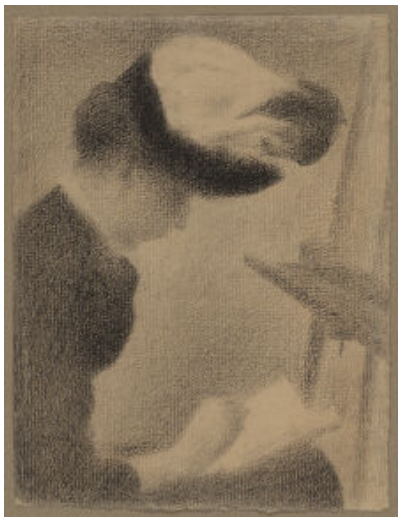
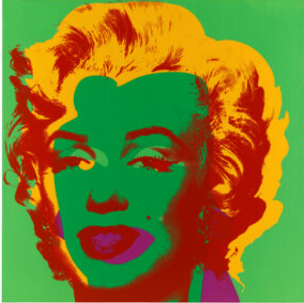
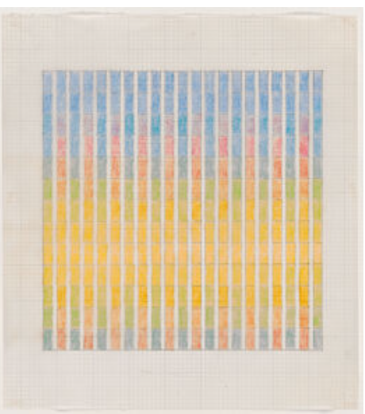

Sketch, Shade, Smudge: Drawing from shade to black
September 12,2025-January 18, 2026
Discover how simple tools can be powerful vehicles for artistic expression.

Current
January 24, 2026-May 10, 2026
With its unexpected juxtapositions among little-known prints, this installation that accompanies the Harvard course of Critical Thinking (AVFS 215) is designed to generate experimental thinking.
Current
January 18, 2026-May 10, 2026
Visitors are invited to explore Munch’s artistic process, uncovering his playful approach and fascination with materiality. Edvard Munch: Technically Speaking also features groundbreaking research that sheds new light on the artist’s techniques and processes.


September 12,2025-January 18, 2026
Discover how simple tools can be powerful vehicles for artistic expression.

September 12,2025-January 18, 2026
Explore a remarkable collection of artworks that span the centuries and discover how it was assembled over seven decades.

September 12,2025-January 18, 2026
Celebrate a 20th-century artist whose innovative abstract drawings and paintings continue to inspire.